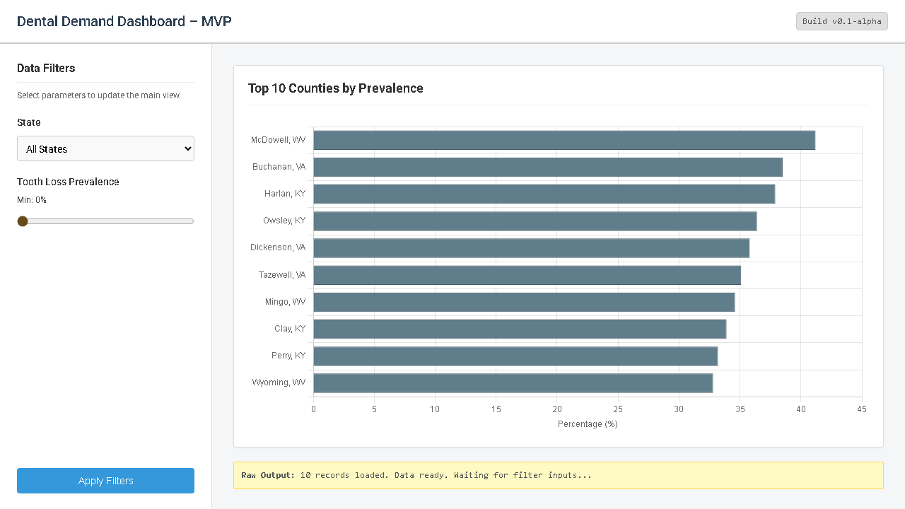
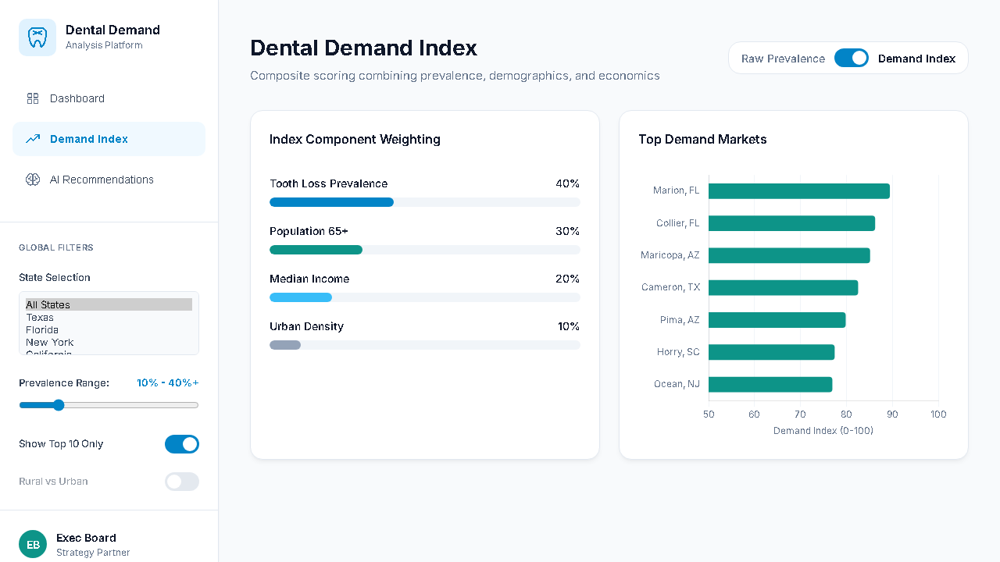

Designed for rapid deployment and testing in secondary markets.

Horizontal Bar Chart
The optimal selection for ranking categorical data (Counties). It accommodates long text labels without requiring awkward rotation.
Quantitative Magnitude
Solid geometries anchored at zero provide an unambiguous physical representation of the underlying value.

Implemented in Streamlit with weighted scoring toggle. Integration of advanced metrics moving beyond raw prevalence.
Deliver a fully integrated decision-support system that accelerates executive strategy formation and minimizes expansion risk.